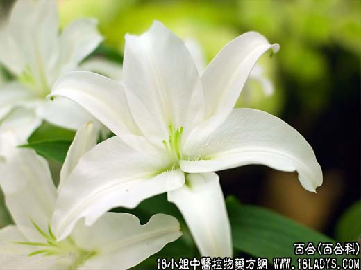

【中药概述】
为百合科植物卷丹或细叶百合的鳞茎。甘、微寒。归肺、心经。
1．润肺止咳：用于阴虚肺燥的咳嗽，肺虚有热、干咳少痰等，如（<医方集解>百合固金丸）。
2．清热宁神：用于热病后余热未尽，神思恍惚，烦躁失眠等，如（<金匮要略>百合知母汤）。
【药效鉴别】
百合与麦冬功能相似，配伍能增强清心宁神、养阴润肺作用。百合清心宁神作用甚良。
【药理作用】
本品有升高外周白细胞的作用。
【化学成分】
含淀粉、蛋白质、脂肪，并含有秋水仙碱等多种生物碱，有一定的抗癌作用。
【用量用法】
本品10——20g，水煎服。
【使用注意】
风寒咳嗽、多痰及中虚便溏者忌。
【附】
炙百合：增强润肺止咳的功效，多用于阴虚燥咳之症。